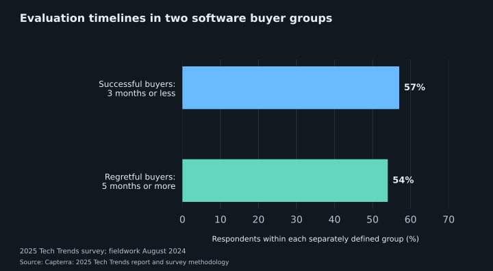

A company needs a client portal. One supplier recommends a subscription product, another proposes a no-code platform, and a developer offers a custom application. Each route sounds plausible because each starts from a different idea of the problem. The decision becomes clearer when all three must support the same work.
Buying, configuring, and building software are practical strategies with different responsibilities. The right choice depends on the process, the people using it, the integrations, the acceptable operating cost, and the control the business needs. A preferred tool can influence a proposal; a clear brief gives the business a way to evaluate it.
This guide explains how to compare SaaS, low-code and no-code platforms, and custom development. It includes a requirements process, a demonstration script, a total-cost model, and a pilot plan. The framework is my recommended approach. Research findings provide context rather than a formula that predicts the outcome of your purchase.
What software buying research can tell us
Capterra's 2025 Tech Trends report surveyed 3,500 people involved in software purchasing across nine countries in August 2024. It reported that 57% of successful buyers took three months or less to evaluate options, while 54% of regretful buyers took five months or more.

| Group or target | Value |
|---|---|
| Successful buyers: 3 months or less | 57% |
| Regretful buyers: 5 months or more | 54% |
These percentages describe different groups and different time ranges. They do not show that shortening an evaluation causes success, or that taking more time causes regret. Capterra operates a commercial software marketplace, which is relevant context when reading its purchasing research and recommendations.
The useful lesson for a project team is to make evaluation purposeful. A longer process can still fail to resolve the important uncertainties. A short process can omit essential checks. The aim is to collect enough relevant evidence to make a defensible decision, with clear ownership of what remains unknown.
Define the job before naming the platform
Describe the process in plain language. Who starts it? What information arrives? Who reviews it? Which decision changes its state? What does a successful completion look like? Keep the first version short enough that the people doing the work can correct it.
For a client portal, a useful description might say that customers submit documents, staff review completeness, a specialist makes a decision, and customers receive an update. That description is already more actionable than a request for a modern dashboard with automation.
Add the exceptions early. A customer may upload the wrong document, belong to a different account, or need to correct a submission after review. A manager may need to reassign work. The suitability of a platform often becomes clearer at those points than during the ideal path.
Identify the current pain and its consequence. Repeated copying, lost requests, unclear ownership, and delayed responses are different problems. A new portal may solve some while leaving others untouched. The brief should state the outcome you want so that the team can challenge a feature that adds complexity without helping the work.
Understand the three routes without ranking them in advance
Buying SaaS means adopting an existing product and its operating model. Configuration may still involve roles, data migration, integrations, and training. The product can offer a strong starting point when its assumptions match the process and its commercial terms fit the business.
Configuring a low-code or no-code platform gives the team tools to assemble an application with less handwritten code in some areas. The amount of custom development varies. Visual workflows still require sound data modeling, permissions, error handling, and a support plan.
Building custom software gives more freedom over behavior and architecture, along with responsibility for developing and maintaining it. That can make sense when the process contains important rules that existing options handle poorly. Custom does not automatically mean better, more secure, or cheaper.
Hybrid approaches are common planning options. A company can keep a mature payment provider, use a configurable internal interface, and build a small integration for a distinctive rule. Compare the resulting system as a whole. The label attached to the frontend does not explain the operational responsibilities behind it.
Separate essential requirements from preferences
An essential requirement affects whether the solution can support the business. A preference influences convenience or appearance but may allow a compromise. Write both down and explain why each matters. Without a reason, a long feature list can become an obstacle to a useful decision.
Define requirements as behavior. Instead of role management, say that customers can view only their own cases, reviewers can update assigned cases, and administrators can reassign work. A provider can then demonstrate the behavior rather than confirm a broad feature name.
Include constraints outside the interface: hosting location where applicable, account ownership, supported integrations, export needs, accessibility, and recovery expectations. These can eliminate an otherwise attractive option or reveal work that the initial price excludes.
Record the consequences of a compromise. If the first release uses a manual monthly export, explain who runs it and what it supports. A deliberate limitation can help launch a useful pilot. An undocumented workaround can become a permanent source of confusion when nobody remembers why the team accepted it.
Use one demonstration script for every option
Prepare representative sample records that do not expose customer information unnecessarily. Give each supplier or implementation team the same task and ask them to show the normal case, an incomplete case, an access restriction, and a failure or correction path.
For the portal example, a customer submits two documents, a reviewer returns one for correction, and the customer resubmits it. A manager reassigns the case. Another customer attempts to view it and should not gain access. That script tests meaningful behavior across several roles.
Ask the team to distinguish existing product features, configuration, custom development, and unverified possibilities. All four may belong in a proposal, but they carry different costs and uncertainty. Do not score a feature as proven simply because someone says an API could probably support it.
Keep the evidence with the comparison. Screenshots, a recorded demonstration where permitted, configuration notes, and a list of unresolved questions can support the final decision. The goal is to let the business explain why an option fits, including what it has actually seen and what still depends on further work.
Treat the data model as a business decision
The data model defines the records and relationships the application can represent. A customer, organization, case, document, payment, and activity entry may each need a distinct identity. A platform that forces several concepts into one generic field can create awkward reporting and integration later.
Start from the process and expected queries. Can staff find all open cases for an organization? Can the system preserve a document's history? Can an administrator distinguish the person who submitted a record from the person currently responsible for it? These questions reveal whether the model supports the work.
Also consider ownership and separation between organizations. A multi-customer application needs reliable access boundaries. Hiding another customer's row in the interface is not sufficient if the underlying API still returns it. Evaluate the actual permission enforcement in the proposed architecture.
Plan identifiers and exports early. Stable record IDs make it easier to connect systems and migrate data. A CSV with names but no relationship keys can require substantial reconstruction. My cloud hosting and control guide explains why data portability and account ownership belong beside the visible feature comparison.
Evaluate integrations through failure as well as success
List the systems the business intends to keep. These may include email, accounting, payments, inventory, CRM, or document storage. For each connection, identify the authoritative record, the direction of data movement, the expected frequency, and the owner of failures.
An integration demonstration should include a missing record, an unavailable service, and a repeated event where relevant. Ask how the team notices a failure and how staff can safely retry or reconcile it. A connector logo indicates an integration option, not proof that every business rule is supported.
For payment events, inspect the provider's specific requirements. Stripe's webhook documentation, for example, explains asynchronous event handling. The application must follow the applicable guidance for verification, duplicates, and delivery behavior. Other providers can have different mechanisms and terms.
Estimate integration work separately from interface configuration. Authentication, mapping, permissions, error handling, and monitoring can account for significant effort even when the visible workflow looks simple. A proposal that makes those tasks explicit gives the business a more credible basis for comparing price and delivery time.
Compare the complete cost of ownership
Use the same assumptions for every option. Include setup, configuration, development, data migration, training, subscriptions, usage charges, hosting, support, and future changes. State the period of comparison and distinguish known prices from estimates.
Consider a hypothetical three-year comparison. One option has a lower setup fee and higher recurring charges. Another requires more initial work and ongoing technical maintenance. Neither wins automatically. The result depends on user count, transaction volume, integrations, and the changes the business expects to make.
Include internal effort. A staff member spending time correcting exports or managing workarounds creates an operating cost even when the software invoice stays low. Estimate that effort transparently and review it during a pilot rather than treating an optimistic assumption as measured savings.
Run sensitivity checks. What happens if the user count doubles, an API changes, or the company needs a second business unit? A simple range can reveal which assumption drives the decision. Avoid excessive precision when the scope remains uncertain. A cost model should help the team understand tradeoffs, not conceal them behind a single impressive total.
Check export and exit claims in practice
Ask what data, files, configuration, and code you can retrieve. Then ask what it would take to operate or maintain the result elsewhere. Those are different questions. A download button may provide records without relationships, or compiled code without a straightforward independent maintenance path.
WeWeb's export and self-hosting documentation provides a concrete example: it distinguishes source and built exports, explains additional self-hosting responsibilities, and warns that independently editing generated code is difficult. Read the current documentation for the exact product and plan under consideration.
Run a small exit exercise. Export representative records and attachments. Inspect whether identifiers and relationships remain usable. If independent deployment matters, test it in a suitable environment and document the services and secrets it still requires. The exercise often produces a more useful answer than a general ownership promise.
Decide which form of independence matters most. A company may prioritize access to its records over maintaining the original interface. Another may need a repository another engineering team can extend. Make the priority explicit so the contract and technical design support the same goal.
Security needs demonstrated responsibilities
Every route requires security work. SaaS shifts some responsibilities to a provider. A configurable platform supplies mechanisms your team must configure correctly. Custom development requires the team to implement and maintain the relevant controls. None of these labels removes the need to examine the actual application.
Review authentication, role enforcement, administrative access, logging, backups, and recovery. Ask who handles updates and how the company learns about a significant incident. Distinguish platform controls from application configuration and from the business's own operating responsibilities.
NIST's Secure Software Development Framework offers a shared vocabulary for discussing secure development and supplier practices. Use it to organize questions where appropriate, then request evidence suited to the project. A supplier's reference to a framework should lead to concrete work, not end the review.
Include the handover in the security discussion. Company-controlled accounts, named access, and documented recovery help the business retain control when people change. A technically capable system can still create operational risk if only one contractor knows how to deploy it or retrieve its backups.
A pilot should answer a decision
Choose the smallest scope that tests the important uncertainty. If the main concern is a complex approval rule, demonstrate that rule. If the risk lies in data migration, test representative records. A visually polished prototype may help gather feedback, but it should not substitute for the part of the system the decision depends on.
Define the acceptance conditions before the pilot starts. The relevant users can complete the task, the permissions hold, the integration handles the agreed failures, and the operating cost remains within the planned range. Add qualitative feedback about clarity and effort.
Record exclusions. A pilot may omit production support, full migration, or a complete accessibility assessment. That can be reasonable if everyone understands what the trial establishes. Avoid describing a successful demonstration as a production-ready service without reviewing the remaining work.
At the end, produce a decision note: continue, revise, compare another option, or stop. Explain the evidence and the unresolved items. A pilot earns its value by reducing uncertainty. It does not need to justify the original tool choice if the observations point toward a better route.
Plan delivery around usable increments
Break implementation into increments that the business can inspect. A first lot might establish accounts, roles, and the data model. Another might complete one public form and its review queue. Payments or advanced automation can follow once the underlying state changes work correctly.
Each increment needs an acceptance path and a clear definition of done. Include error cases and permissions in the review. A feature is difficult to evaluate if the only evidence is a developer's statement that the backend exists.
Keep estimates conditional on scope and discovery. A detailed specification can still contain assumptions about an external API or old data quality. Identify those dependencies and the work needed to verify them. A schedule becomes more credible when it shows the decisions that could change it.
Reserve time for deployment, documentation, and training. These tasks determine whether the company can use the result. A project that consumes its entire budget on feature development may arrive at launch with unclear ownership and no recovery process. Delivery should end with a service the organization can operate, not merely a repository it can download.
Make maintenance part of the purchase decision
Ask who changes a field, updates a workflow, investigates a failed job, and helps a new user. Different solutions distribute that work differently. A visual editor may let staff make some changes while an integration still needs a developer.
Define support boundaries and response arrangements. Clarify which work a subscription or maintenance fee includes and what requires a new estimate. Separate defect correction from a new requirement. The distinction should use the agreed behavior and scope rather than depend on an argument after launch.
Plan for the people available. A sophisticated platform can be a poor fit if nobody has time to administer it. A custom system can work well when documentation and support match the company's capacity. Evaluate the operating model alongside the feature set.
Review the choice after real use. Staff may discover that an assumed requirement rarely occurs, while a small repeated task creates most of the frustration. Use that evidence to guide improvements. A good software decision supports learning instead of locking the organization into defending the original specification forever.
Use a comparison matrix without hiding the uncertainty
A comparison matrix can organize evidence, but its design influences the decision. Begin with essential requirements that every viable option must satisfy. Keep those separate from preferences that can receive a weighted score. A high total should not compensate for a failure to enforce an essential customer-data boundary.
Choose weights with the business before scoring the products. Otherwise, the team may unconsciously adjust the method to favor the option it already prefers. Keep the scoring scale understandable and attach a reason and evidence reference to each important score.
Use a distinct state for unknown. A feature that a provider has not demonstrated should not receive the same score as a confirmed absence or a confirmed capability. Record the investigation needed and decide whether the uncertainty affects the purchase or can wait for a pilot.
Review the result with sensitivity in mind. If a small change in one weight reverses the ranking, the choice may depend on a preference the company has not settled. That is useful information for a discussion. It does not mean the matrix has produced an objective winner beyond question.
Preserve the narrative decision alongside the numbers. Explain why the selected route supports the process, what compromises the business accepts, and what would trigger a review. The matrix then serves as an organized record rather than a mathematical appearance of certainty over subjective assumptions.
Check migration and adoption before approving the budget
A new system begins with existing information and working habits. Inventory the records, documents, permissions, and history that need to move. Decide what the team should clean, archive, or leave behind. Migration is a chance to improve data quality, but it also creates work that belongs in the estimate.
Test representative records before planning the full transfer. Include unusual cases, relationships, attachments, and records with missing fields. Compare counts and selected examples after import. A successful upload message does not prove that every relationship or business meaning survived.
Plan the transition for staff. Identify which tasks change, what training they need, and where they can ask for help. If the organization operates old and new systems briefly, define which one owns each type of record. Unclear parallel operation can create conflicting updates and reconciliation work.
Use a realistic adoption check. Ask users to complete the agreed task without the implementer directing every click. Observe where they hesitate and what information they cannot find. Their feedback can reveal a configuration or content problem before the organization commits to a wider rollout.
Finally, budget for the initial support period and the improvements it may reveal. This is not permission for unlimited scope; it is an acknowledgment that real use produces evidence. A documented acceptance process, a clear defect route, and a prioritized enhancement list help the business separate necessary correction from a new idea worth estimating later.
Questions about choosing business software
Is no-code suitable for serious applications?
Suitability depends on the platform and the application requirements. Evaluate data modeling, permissions, integrations, performance, operating controls, and exit options. The amount of code written by hand does not establish whether the resulting service fits the business.
When does custom development make sense?
It can make sense when important rules, integrations, or user journeys do not fit existing products well enough, and the business can support the implementation and maintenance. Compare the cost of customization and workarounds before assuming a full rebuild is necessary.
What should we request from a supplier first?
Share the process brief and ask for a proposed route, assumptions, evidence of relevant work, a demonstration plan, and a cost breakdown. Give suppliers enough context to explain their reasoning. A useful proposal should show how the solution supports the work and what remains to verify.
Choose a route your team can use and sustain
The strongest software choice connects a real process with a workable technical and operating model. Compare options against the same tasks, inspect the difficult cases, and make the ownership and costs visible. Then use a focused pilot to earn confidence before committing to the larger investment.
I help businesses turn process requirements into applications, integrations, and practical implementation plans. Explore my web application services, review selected projects, or share the workflow you want to improve. We can compare the available routes, identify the important uncertainties, and build a first release that your team can understand and maintain.
Sources and research notes
Primary publications and official documentation consulted for this guide. Research periods are stated beside the relevant claims and charts. Implementation checklists and worked examples represent my analysis; fictional examples are not client results. Reviewed 22 November 2026.